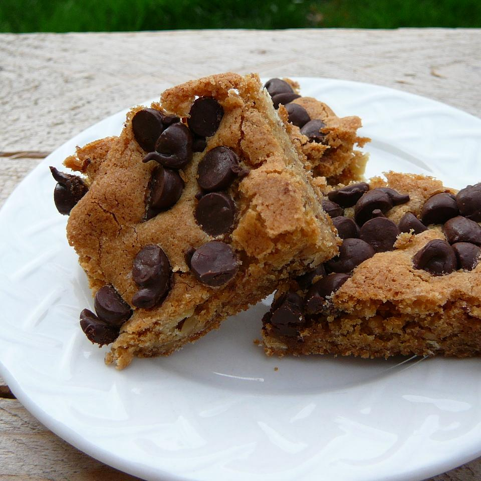

Blonde Brownies

Description
These blonde brownies are rich and chewy, with chocolate chips on top.
Ingredients
- 1 cup sifted all-purpose flour
- ½ teaspoon baking powder
- ½ teaspoon salt
- ⅛ teaspoon baking soda
- ½ cup chopped walnuts
- 1 cup packed brown sugar
- ⅓ cup butter, melted
- 1 large egg, beaten
- 1 tablespoon vanilla extract
- ⅔ cup semisweet chocolate chips
Steps
- Preheat the oven to 350 degrees F (180 degrees C). Grease a 9x9-inch baking pan.
- Sift together sifted flour, baking powder, salt, and baking soda in a medium bowl. Stir in chopped nuts; set aside.
- Mix brown sugar and melted butter in a large bowl until combined; cool slightly.
- Stir beaten egg and vanilla into brown sugar mixture. Add flour mixture, a little at a time, mixing just until combined. Spread batter into the prepared baking pan. Sprinkle chocolate chips on top.
- Bake in the preheated oven until a toothpick inserted in the center comes out clean, 20 to 25 minutes.